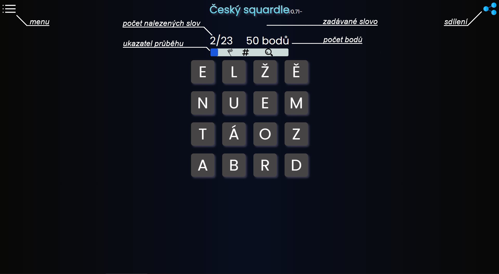

po kliknutí na nastavení podruhé se vrátíte na předchozí místo
rozvržení hrací plochy - na počítači jsou nalezená slova a hrací plocha vedle sebe
stránka se méně seká a nastavení si lze vypnout některé funkce, které by ji mohly zpomalovat
sjednocován vzhled stránky pro všechna okna
slova dlouhá více než 15 písmen zmenší, aby šla přečíst
nová výherní animace s vybranými smajlíky
nové squardly
Verze 0.82
nastavení umožňuje filtrovat squardly v seznamu
upraven vzhled
tlačítko otáčení hrací plochy je vidět
písmena hrací plochy neproblikávají
pro každý squardle se zaznamenává čas hraní a přesnost (k nahlédnutí zatím jen celkově ve statistikách)
Verze 0.81 - Jsi ztracen?💤 Otoč!🍕 (19. 8. 2022)
testovací verze nastavení
smajlíci jsou zpátky!(stačí je zapnout v testovací verzi nastavení)
otačení hrací plochy
upravena kompatibilita s mobily
změnena pozadí squardlů v seznamu
Verze 0.8
hrací plocha se přizpůsobí velikosti obrazovky
nový techno vzhled stránky
odstraněny poletující smajlící (ale vrátí se!)
nová náhodná pozadí editoru
první verze návodu
první kroky k přidání nastavení
Verze 0.71
nový rozvržení stránky editoru
jednodušší úpravy na mobilu
při tvorbě lze upravit, kdy se odemykají hinty
ukazování právě dostaných bodů
poletující smajlíci 🎪 (jen test, nejspíš bude odstraněno)
Verze 0.7
novinky
zkouška obrázků v novinkách
(snad) lepší výběr políček ve hře - snadnější diagonální výběr a výběr více najednou pokus se vynechá políčko
čára spojuje políčka správně
nelze pokračovat v ukončených squardlech
opraveno formátování sdílení
statistiky
výsledky nahradily statistiky (výsledky jsou již ve Seznamu)
nový hint
hinty zobrazeny ve hře
u ukončených squardlů lze v nalezených slovech vidět i nenalezená slova
opraveno problikávání slov
Verze 0.6
sdílení squardlů
editor exportuje soubory
je možné přidat squardly vlastní nebo od přátel
animace
změna vzhledu stránky
stále hrozné novinky, ale aspoň existují
Verze 0.5
změna celého systému hry
týdenní a odpočinkový typ
tlačítka fungují
Celkové statistiky
Týdenní
Odpočinkové
Speciální
Sdílené
O Squardlu
Squardle (čteno skvardl) je česká adaptace hry Squaredle (čteno skvérdl) dostupné na https://squaredle.app.
Návod
Squardle je hra podobná osmisměrce.
Liší se tím, že hledaná slova nejsou předem známá a nemusí být pouze v jedné linii.
Cíl hry
Najdi všechna slova.
Popis herní plochy

Zadávání slova
Slovo se zadává přejetím po daných písmenech na hrací ploše v daném pořadí (viz příklad 2).
Písmena sousedí vertikálně, horizontálně, ale i diagonálně.
Počet „zahnutí“ v schovaných slovech není nijak omezen.
Mohou proto vznikat i následující „nepěkné“ situace (viz příklad 2).
Druhy slov
Ve hře lze najít slova:
potřebná k dokončení – používaná nebo zajímavá méně známá, mohou být ale ve všech tvarech (pádech, osobách a časech...)
bonusová – neznámá slova, krásy českého jazyka, někdy prostě jen blbá slova
Získávání bodů
Za každé nalezené slovo se získávají body.
Počet získaných bodů závisí na jeho délce a zobrazuje se po nalezení slova vpravo od aktuálního počtu bodů.
Nalezená slova
Již nalezená slova lze zobrazit kliknutím nad hrací plochu
(resp. ukazatel průběhu nebo právě zadané slovo).
Nápovědy
Postupem hry se odemykají nápovědy, které pomáhají s nalezením složitějších slov.
Nápovědy jsou zobrazeny jako obrázky na ukazateli průběhu nad hrací plochou.
Vysvětlivky k nápovědám jsou zde:
kolik slov začíná písmenem - červené číslo políčkách
v kolika slovech je písmeno - zelené číslo na políčkách
odkrytí počátečních písmen - lze vidět po odemčení v nalezených slovech
Konec hry
Hra končí po nalezení všech potřebných slov. Po ukončení lze stále hledat slova bonusová.
Nemusí tam ale už žádné být a (zatím) není nikde zobrazen počet bonusových slov.